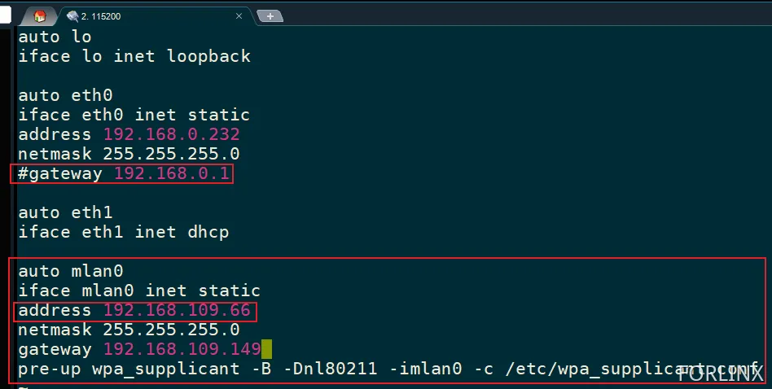

OK3568 4.19.206 Buildroot Configuring Static IP for Wi-Fi and Enabling Automatic Connection on Startup
Document classification: □ Top secret □ Secret □ Internal information ■ Open
Copyright
The copyright of this manual belongs to Baoding Folinx Embedded Technology Co., Ltd. Without the written permission of our company, no organizations or individuals have the right to copy, distribute, or reproduce any part of this manual in any form, and violators will be held legally responsible.
Forlinx adheres to copyrights of all graphics and texts used in all publications in original or license-free forms.
The drivers and utilities used for the components are subject to the copyrights of the respective manufacturers. The license conditions of the respective manufacturer are to be adhered to. Related license expenses for the operating system and applications should be calculated/declared separately by the related party or its representatives.
Revision History
Date |
Version |
Revision History |
|---|---|---|
11/19/2024 |
V1.0 |
Initial Version |
Configuring Static IP for Wi-Fi and Enabling Automatic Connection on Startup
Verified on Linux 5.10.160 Buildroot, just add mlan0 config in interfaces.
Note: This may cause the browser that comes with the board to be unusable:
Solution:
[root@ok3568:/]# rm /usr/share/matrix-gui-2.0/lock/qt
Modification Method
Connect to Wi-Fi and Determine the Network Segment:
[root@ok3568:/]# fltest_wifi.sh -i mlan0 -s test -p 12345678
wifi mlan0
ssid test
pasw 12345678
[ 249.708244] IPv6: ADDRCONF(NETDEV_UP): mlan0: link is not ready
waiting...
try to connect again...
[ 255.379720] IPv6: ADDRCONF(NETDEV_CHANGE): mlan0: link becomes ready
udhcpc: started, v1.27.2
udhcpc: sending discover
udhcpc: sending select for 192.168.109.47
udhcpc: lease of 192.168.109.47 obtained, lease time 3599
deleting routers
adding dns 192.168.109.149
Finshed!
Note down the bolded parts below, which correspond to: address, netmask, gateway.
[root@ok3568:/]# ifconfig mlan0
mlan0 Link encap:Ethernet HWaddr E8:FB:1C:67:30:99
inet addr:192.168.109.47 Bcast:192.168.109.255 Mask:255.255.255.0
inet6 addr: fe80::eafb:1cff:fe67:3099/64 Scope:Link
UP BROADCAST RUNNING MULTICAST MTU:1500 Metric:1
RX packets:20 errors:0 dropped:0 overruns:0 frame:0
TX packets:39 errors:0 dropped:0 overruns:0 carrier:0
collisions:0 txqueuelen:1000
RX bytes:2676 (2.6 KiB) TX bytes:4154 (4.0 KiB)
[root@ok3568:/]# route //Query is slow, wait for ten seconds
Kernel IP routing table
Destination Gateway Genmask Flags Metric Ref Use Iface
default 192.168.109.149 0.0.0.0 UG 0 0 0 mlan0
192.168.109.0 * 255.255.255.0 U 0 0 0 mlan0
Check the wpa_supplicant configuration file:
[root@ok3568:/]# vi /etc/wpa_supplicant.conf
Below, the ssid is the Wi-Fi that will connect automatically, and psk is the password:

Modify the interfaces file:
[root@ok3568:/]# vi /etc/network/interfaces
Add the followings:
Comment out the gateway under eth0 to avoid conflicts.
Add the address, netmask, and gateway obtained in the first step to the mlan0 section:
Note: The address can be set to one in the same network segment. The detected address is 192.168.109.47, but it is set to 192.168.109.66.

Add the following code:
auto mlan0
iface mlan0 inet static
address 192.168.109.66
netmask 255.255.255.0
gateway 192.168.109.149
pre-up wpa_supplicant -B -Dnl80211 -imlan0 -c /etc/wpa_supplicant.conf
The last line ensures that the configuration from wpa_supplicant.conf is read every time before mlan0 starts up. Thus, after a reboot, don’t need to manually connect to Wi-Fi again.
After completing these settings, restart the development board, and you will see that the mlan0 IP has been changed to 192.168.109.66.

Verification
After restarting the development board, manually add the DNS:
[root@ok3568:/]# echo "nameserver 114.114.114.114" > /etc/resolv.conf
Test:
[root@ok3568:/]# ping www.forlinx.com
PING www.forlinx.com (211.149.226.120) 56(84) bytes of data.
64 bytes from 211.149.226.120: icmp_seq=1 ttl=47 time=51.7 ms
64 bytes from 211.149.226.120: icmp_seq=2 ttl=47 time=58.4 ms
64 bytes from 211.149.226.120: icmp_seq=3 ttl=47 time=56.3 ms
64 bytes from 211.149.226.120: icmp_seq=4 ttl=47 time=52.1 ms
64 bytes from 211.149.226.120: icmp_seq=5 ttl=47 time=52.0 ms
Add a startup script:
[root@ok3568:/]# vi /etc/init.d/S99-autowifi.sh

Grant executable permissions:
[root@ok3568:/]# chmod +x /etc/init.d/S99-autowifi.sh
[root@ok3568:/]# ping www.forlinx.com
PING www.forlinx.com (211.149.226.120) 56(84) bytes of data.
64 bytes from 211.149.226.120: icmp_seq=1 ttl=47 time=56.4 ms
64 bytes from 211.149.226.120: icmp_seq=2 ttl=47 time=58.6 ms
64 bytes from 211.149.226.120: icmp_seq=3 ttl=47 time=57.2 ms
64 bytes from 211.149.226.120: icmp_seq=4 ttl=47 time=155 ms
64 bytes from 211.149.226.120: icmp_seq=5 ttl=47 time=54.4 ms
64 bytes from 211.149.226.120: icmp_seq=6 ttl=47 time=52.0 ms
64 bytes from 211.149.226.120: icmp_seq=7 ttl=47 time=65.9 ms
64 bytes from 211.149.226.120: icmp_seq=8 ttl=47 time=68.1 ms
64 bytes from 211.149.226.120: icmp_seq=9 ttl=47 time=96.2 ms